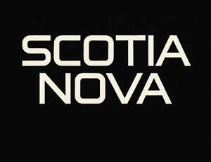

Trade Mark Journal No.2025/030 25 July 2025
UK00004198622 4 May 2025 (21,25,32,33,35,43)

- Class 21
- Whisky glasses; drinking glasses; tasting glasses; glass decanters; display stands for bottles; bottle cradles; ice buckets; coasters; cocktail shakers; measuring jiggers for spirits; bar tools and utensils (non-electric); non-electric bottle openers; drinking vessels; Beverage glassware; Crystal [glassware]; Stemware; Painted glassware; Glass tableware; Coasters (tableware); Glass mugs; Glasses, drinking vessels and barware; Goblets; Glass flasks; Glass carafes; Hand cut crystal glassware; Glass bottles; Tumblers for use as drinking glasses; Glass containers; Figurines of glass; Glass ornaments; Decorative chinaware; Vases; Statuettes of porcelain, ceramic, earthenware or glass; Glass storage jars; Drinking goblets; Decorative porcelain ware.
- Class 25
- T-shirts; Sweatshirts; Jackets; Aprons; Hats and caps; Scarves; Bar uniforms; Event crew clothing; Branded hospitality wear; Footwear; Promotional clothing; Clothing; Leather clothing; Veils [clothing]; Belts for clothing; Clothing for leisure wear; Clothing for skiing.
- Class 32
- Non-alcoholic spirits; Alcohol-free whisky alternatives; Alcohol-free cocktails (mocktails); Flavoured waters; Mineral and aerated waters; Non-alcoholic preparations for making beverages; Soft drinks; Energy drinks; Sparkling non-alcoholic beverages; Non-alcoholic fermented beverages; Mood enhancing or adaptogenic non-alcoholic beverages; Non alcoholic aperitifs; Non-alcoholic malt free beverages [other than for medical use]; Alcohol free beverages; Beverages (Non-alcoholic -); Non-alcoholic carbonated beverages; Non-alcoholic malt drinks; Extracts for making non-alcoholic beverages; Non-alcoholic beverages flavoured with tea; Non-alcoholic drinks; Alcohol free aperitifs; Isotonic non-alcoholic drinks; Functional water-based beverages.
- Class 33
- Scotch whisky; blended whisky; single malt whisky; whisky-based liqueurs; distilled spirits; flavoured spirits; aperitifs; digestifs; spirits and liqueurs for consumption on or off premises; Alcoholic cocktails; pre-mixed alcoholic beverages (excluding beer); Blended grain whisky; Single grain whisky; Low-alcohol whisky-based beverages; Blended malt whisky; Alcoholic cocktails; Alcoholic aperitifs; Alcoholic tea-based beverage; Alcoholic extracts; Alcoholic essences; Low alcoholic drinks; Pre-mixed alcoholic beverages, other than beer-based; Alcoholic beverages, except beer; Grain-based distilled alcoholic beverages; Alcoholic energy drinks; Prepared alcoholic cocktails; Alcoholic beverages except beers; Alcoholic carbonated beverages, except beer; Aperitifs with a distilled alcoholic liquor base; Flavoured brewed alcoholic malt beverages, except beers; Preparations for making alcoholic beverages.
- Class 35
- Retail store services connected with the sale of alcoholic and non-alcoholic beverages; Online retail services relating to spirits and barware; Promotional services relating to whisky brands; Advertising services in the beverage and hospitality sector; Brand merchandising; Organisation of product launches and promotional events; Consultancy in the field of brand strategy and retail marketing; Influencer and experiential marketing campaigns; Shop window display arrangement services; Shop window dressings; Window dressing and display arrangement services.
- Class 43
- Bar services; Cocktail lounge services; Restaurant services; Hotel services; Pop-up bar services; Provision of food and drink in connection with branded events; Whisky tasting services; Temporary accommodation and hospitality experiences; Hospitality suite services; Beverage pairing events; Operating private clubs and member lounges; Catering services for luxury events; Event venue hire and experiential programming; Catering of food and drinks; Food and drink catering for banquets.
Jamie Dick-Cleland